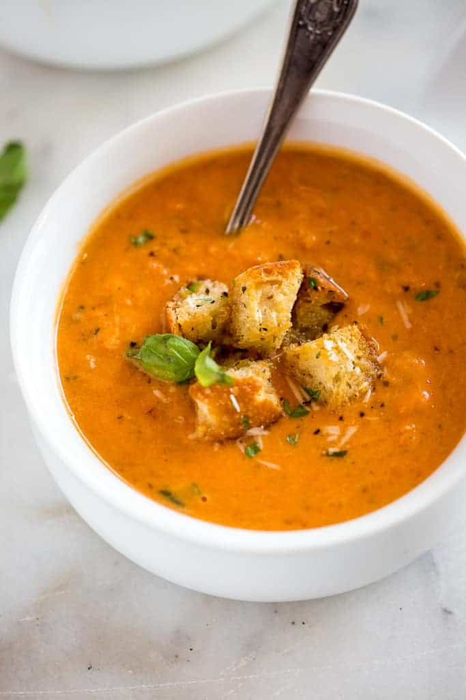

Tomato Basil Soup (Like Applebee's)

A creamy rendition of a traditional favorite. This has made me a SouperHero in my house.
This meal is full-bodied enough to not need the addition of a sandwich; however, garlic bread is nice for dipping.
Ingredients:
- 6 tablespoons butter
- 1 onion, thinly sliced
- 15 baby carrots, thinly sliced
- 2 stalks celery, thinly sliced
- 3 cloves garlic, chopped
- 1 (28 ounce) can tomato sauce (such as Hunt's®)
- 1 (8 ounce) can tomato sauce (such as Hunt's®)
- 1 ¼ cups chicken broth
- 2 tablespoons chopped fresh basil
- 1 tablespoon chopped fresh oregano
- salt and ground black pepper to taste
- 1 ½ cups heavy whipping cream
Directions:
- Melt butter in a large pot over medium-low heat; cook and stir onion, carrots, celery, and garlic until vegetables are tender, about 10 minutes.
- Stir in both amounts of tomato sauce, chicken broth, basil, and oregano. Increase heat to medium and simmer until soup is reduced, 10 to 20 minutes.
- Pour soup into a blender no more than half full. Cover and hold lid down; pulse a few times before leaving on to blend.
- Add cream. Continue to puree in batches until smooth, transferring creamy soup to another pot.
- Heat soup over medium-high heat until hot, about 5 minutes more.